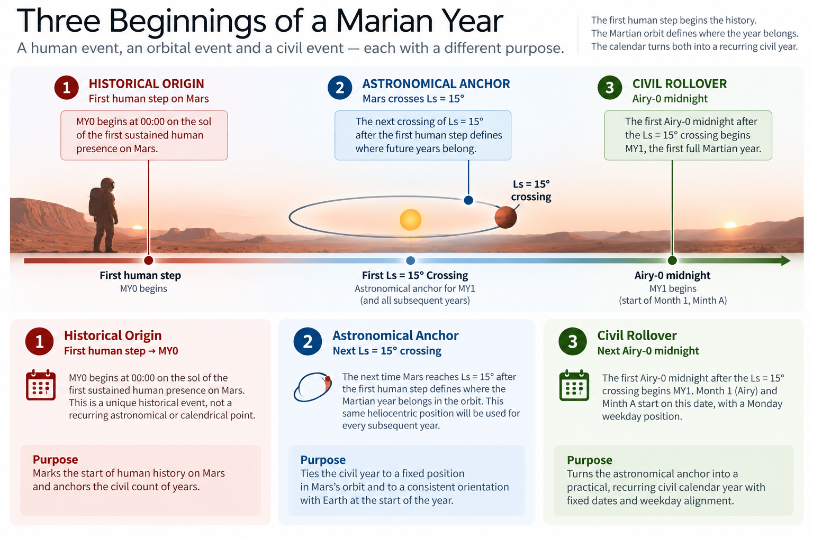

ANCHOR
13) Where the Year Begins
Anchoring Marian to Mars
A calendar year turns out to need more than one kind of beginning.
It needs an astronomical anchor that says where the planet is in its annual cycle, a civil rollover at which one date ends and the next begins, and — if the calendar numbers its years — a historical origin from which its chronology starts counting.
On Earth, those three ideas are so deeply bundled together by inheritance that most people never encounter them as separate choices. New Year arrives at midnight on 1 January because that is what the calendar says. Nobody checks Earth's position in its orbit before opening the champagne.
Mars has no such inheritance, so the distinctions have to be made deliberately.
Marian therefore answers three different questions:
Where in the Martian year does the regular civil year belong?
At what defined instant does a civil date change?
When does human civil history on Mars begin?
Its answers are:
Astronomical anchor — Ls = 15°
Canonical civil rollover — midnight at Airy-0
Historical origin — the recognised first human step on Mars
The first human step begins the partial Marian Year 0, or MY0. The first complete regular year, MY1, begins at the first Airy-0 midnight following Mars's next passage through Ls = 15°.
The human event begins the history. The astronomical marker fixes the annual position. The civil boundary turns a continuous astronomical event into a usable date. What initially looks like one question — when does the year begin? — is therefore three different questions with three different answers.
Trying to make one event perform all three jobs would be neater on a diagram and less useful in a civilisation.
Where in the orbit?
Calling a Martian year “one orbit around the Sun” is broadly correct but not precise enough for a civil standard.
Mars's seasonal position is commonly described using areocentric solar longitude, written Ls. The northern vernal equinox is defined as Ls = 0°, after which the coordinate progresses through the Martian seasonal cycle and eventually returns to the same point.

Detailed figure description
A three-stage timeline separates the recognized first human step on Mars, the next qualifying astronomical crossing of Ls = 15 degrees, and the first qualifying Airy-0 midnight. Three explanatory columns distinguish historical origin, astronomical anchoring and civil rollover. The image describes the MY0-to-MY1 rule; it does not show a known landing date or an instantiated MY1 timestamp.
Editorial note: this is a descriptive summary, not an independently verified transcription of every diagram label. Refer to the surrounding text and the Marian technical specification for authoritative numeric details where applicable.
That gives a calendar designer a reproducible annual reference. A civil year could begin at Ls = 0°; Darian does exactly that, and an equinox has the obvious advantage of being an established seasonal marker. But an equinox is not compulsory. A civil calendar needs a stable point in the annual cycle, and choosing which point to use remains a design decision.
Marian chooses:
Ls = 15°
Nothing dramatic happens on Mars at fifteen degrees. The number is not mathematically sacred, and it is not being proposed as a superior definition of Martian spring.
The reason is operational.
Marian is designed for an early permanent civilisation that remains deeply connected to Earth. That raises a question most terrestrial calendars have never needed to ask: can the Martian annual origin provide useful intuition about the relationship between the two inhabited planets without ceasing to be fundamentally Martian?
Around the anticipated founding era, Mars at Ls = 15° lies close to a heliocentric direction of roughly 100°. Earth around the beginning of the Gregorian year lies close to the same general direction.
These are different coordinates and should not be confused. Ls describes Mars's position within its own seasonal cycle; heliocentric longitude describes direction around the Sun within a wider orbital reference frame.
The useful feature is simply that the chosen Martian seasonal marker places Mars, around the intended founding era, in approximately the same Sun-centred direction associated with Earth near the start of the Gregorian year.
The planets are not necessarily near one another. Their New Years are not simultaneous. Their years are different lengths, and their months advance around the Sun at different rates.
What they gain is a broadly shared directional origin for their twelve-part annual maps. Later, that supports a coarse Earth–Mars month-gap mental model: the separation between terrestrial and Marian month positions can provide some intuition about relative orbital phase and, very approximately, communications conditions.
It is not a navigation system and not a substitute for ephemerides. It is simply useful orientation.
Martian first, Earth second
Once that Earth-facing relationship appears, there is an obvious temptation to optimise it.
The technical analysis found that other starting values can produce slightly stronger statistical relationships under particular measures of Earth–Mars geometry. A value around Ls = 22°, for example, performed somewhat better under one discrete comparison.
Marian does not use it.
A calendar intended to last should be cautious about optimising a primary civil boundary around a secondary metric whose exact optimum depends on how months are represented, how orbital relationships are measured and which historical interval is analysed.
Ls = 15° has a simpler rationale. Around the founding era, it places Marian New Year close to the same broad heliocentric direction associated with Gregorian New Year. That principle can be explained without reopening the analysis notebook.
There is an apparently cleaner alternative still: ignore Ls and define Marian New Year directly by a fixed heliocentric longitude near 100°.
Marian rejects that too.
A fixed inertial direction and a fixed Martian seasonal position are not permanently identical. Over long periods, tying the civil year directly to heliocentric longitude would allow New Year to migrate relative to Mars's tropical seasonal cycle.
Using Ls keeps the annual reference tied to Mars. The Earth relationship is a useful consequence of which Martian seasonal point has been chosen, not the reference to which the calendar is ultimately chained.
That establishes the priority:
Mars comes first.
If the Earth-facing relationship changes gradually over centuries, Marian keeps Ls = 15°. The civil year belongs to Mars; it simply begins at a point chosen to make an early Earth-connected civilisation slightly easier to understand.
From an astronomical instant to a civil date
Selecting Ls = 15° still does not tell us exactly when the date changes. The astronomical anchor answers where the year belongs in Mars's annual cycle; it does not, by itself, provide a practical civil rollover.
Mars passes through that longitude at a precise astronomical instant. Civil calendars need discrete boundaries.
Suppose the crossing occurred halfway through a settlement's afternoon. Marian could declare that the old year ended at that instant and the new one began immediately. That would be astronomically precise and civically awkward.
Birth certificates, contracts, databases, school calendars and accounting systems work better when dates change at defined boundaries rather than halfway through them.
Marian therefore separates the astronomical anchor from the civil rollover. Its canonical global boundary is:
midnight at Airy-0
Airy-0 provides the Martian prime-meridian reference already used in contemporary Mars timekeeping, so Marian adopts it rather than inventing a new privileged longitude for calendrical purposes. The benefit is interoperability, not symbolism.
A settlement elsewhere on Mars might use local mean solar time. A larger society might eventually use time zones. A habitat network could adopt one administrative clock across several sites. Marian does not prescribe any of those choices; it defines the canonical planetary date boundary against which they can be converted.
This is an important limit on the calendar's scope. Marian organises sols into civil dates and larger periods. It does not attempt to settle every question about hours, minutes, seconds or local clock regimes.
A calendar is not a time-zone system. They must interoperate, but they do not have to be the same thing.
For the founding transition, the rule is therefore precise: Mars first passes through Ls = 15°, and the next Airy-0 midnight begins the first complete Marian year.
The astronomical event establishes where the year belongs. The civil boundary decides when the date starts.
History begins with arrival
Astronomy can define a recurring annual reference and civil rules can define a rollover. Neither can tell us which year should be called Year 1.
For that, Marian uses a human event:
Marian Year 0 begins at the recognised first human step onto the Martian surface.
The choice is deliberately historical rather than astronomical. Before humans arrive, scientific chronology already provides suitable ways to describe Mars. There is little civil value in projecting Marian year numbers backwards through millions of years merely to demonstrate that the arithmetic works.
Marian is intended as civil infrastructure for human settlement, so its era begins when direct human history on Mars begins. The choice has symbolic force, but it is practical as well: the event should be memorable, independently documented and much easier for later generations to identify than an arbitrary calculated epoch chosen centuries before anyone lived there.
There is only one inconvenience. The first person to step onto Mars is vanishingly unlikely to do so at exactly the point where the regular Marian year should begin. Astronauts will have enough to manage without delaying the airlock because a calendar designer would prefer a cleaner epoch.
That is why Marian has MY0.
The deliberately incomplete Year 0
Imagine that the first human step occurs halfway through the Martian seasonal cycle. If that moment were declared the start of MY1, one of two undesirable things would follow: either Marian would abandon its Ls = 15° annual reference so that the first year could start immediately, or it would create an irregular first “year” whose internal annual structure pretended to begin at a seasonal point where it did not belong.
Marian instead separates the historical origin from the first complete calendar year. The first human step begins MY0, which continues until Mars reaches the next Ls = 15° reference and the following Airy-0 midnight. At that midnight, MY1 begins.
The sequence is therefore:
First recognised human step → MY0 begins
Next passage through Ls = 15°
First Airy-0 midnight after that passage → MY1 begins
MY1 → MY2 → MY3 → ...
MY0 is deliberately not a normal 668- or 669-sol Marian year. It is a transitional epoch interval.
During that period, mission-relative sol counts would almost certainly remain operationally important. A crew does not need to abandon the chronology used throughout landing operations merely because somebody has touched the surface and started a civil era.
MY0 therefore bridges two forms of timekeeping: mission chronology before and during arrival, and regular civil chronology after settlement begins.
There is no need to invent dates for the part of the Martian year before humans arrived simply to make the first calendar diagram rectangular.
History begins where history begins. The bureaucracy can start cleanly afterwards.
A future fact cannot yet have a timestamp
Defining the epoch around a human event leaves one unavoidable blank in a book written before that event occurs. Nobody can yet state the definitive timestamp of MY0, nor can we state the Gregorian date on which MY1 will begin.
The rule can be defined now. Its numerical instantiation must wait for history.
An eventual implementing authority will need an authoritative record of what constitutes the recognised first human step and precisely when it occurred. At the level of this calendar architecture, the principle is enough.
Attempting today to specify whether the epoch means first boot contact, first fully weight-bearing step, first exit from a vehicle or some other physically precise definition would manufacture certainty around a landing architecture that does not yet exist. The future standard will need that precision; the present design does not need to invent it.
This is a normal feature of standards built around future events. A specification can define which fact matters before the fact itself has occurred.
The year does not restart from the sky every time
After MY1 begins, Marian does not wait each year for an astronomer to announce the next exact passage through Ls = 15° and then start a new civil year at the following midnight. That would make routine chronology dependent upon repeated ephemeris calculation.
Instead, Ls = 15° establishes the astronomical target for the calendar. The civil system then proceeds through deterministic integer-sol years of 668 or 669 sols, with intercalation keeping those civil years tracking the astronomical reference over time.
In other words:
astronomy defines the target; the calendar does the bookkeeping.
This is the same separation of responsibilities that appears throughout Marian. A precise scientific coordinate remains available when precise orbital position matters; the civil date remains simple enough to compute without consulting the sky every New Year.
Choosing Ls = 15° as the annual reference also does not mean Marian's twelve months represent equal 30° sectors of Mars's orbit. They do not. Marian months are primarily regular elapsed civil periods of 55 or 56 sols. Because Mars changes speed around its eccentric orbit, equal-duration civil months cover different amounts of Ls.
That is intentional.
Ls gives precise seasonal position. The Marian date gives regular civil position.
They are complementary coordinates rather than rival attempts to describe the same thing.
One year, three beginnings
What looked at the beginning of the chapter like one question can now be stated more precisely. A Marian year requires three different kinds of beginning because each establishes something different.
The first human step provides the historical origin. It answers: When does human civil history on Mars begin?
Ls = 15° provides the astronomical anchor. It answers: Where in Mars's recurring seasonal cycle does the regular civil year belong?
Airy-0 midnight provides the canonical civil rollover. It answers: At what defined boundary does the date change?
These are different questions, so Marian gives them different answers. Functional Separation applies here just as it does elsewhere in the calendar: there is no advantage in forcing one event to carry three distinct responsibilities merely because the everyday phrase the beginning of the year makes them sound like one thing.
Mars does not return to Ls = 15° after an integer number of sols. The relevant annual cycle is approximately 668.59 sols, while civil years have to contain whole sols. Marian therefore alternates between 668-sol and 669-sol years so that the civil calendar can remain close to its astronomical reference over time.
The exact intercalation pattern is another piece of machinery. The principle established here is more fundamental.
The human event begins the history. The sky defines where the year belongs. The calendar decides when the date changes.